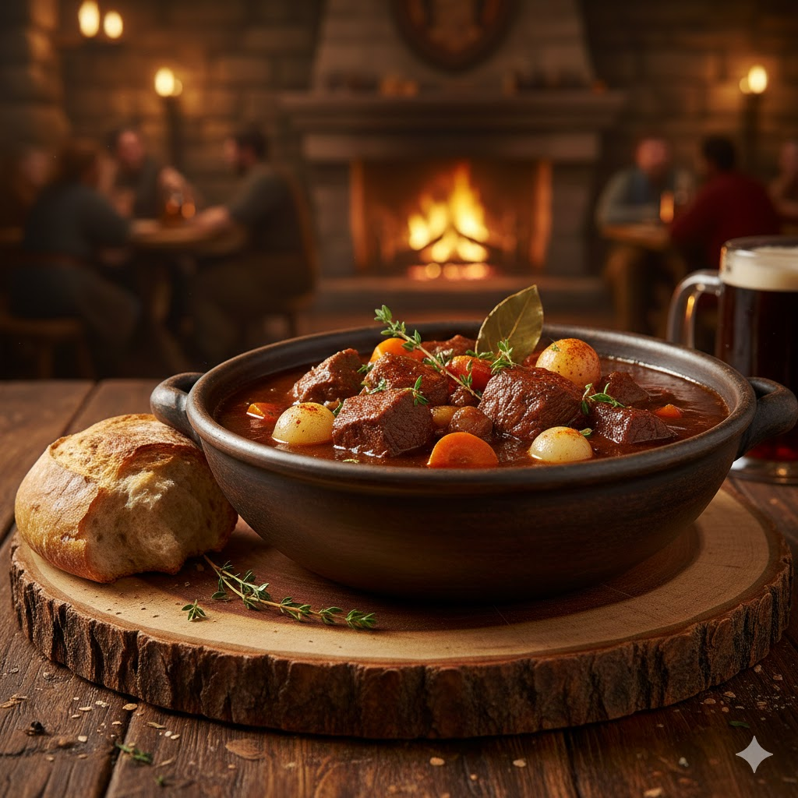

Recetario
Estofado del León de Ventormenta
Plato cálido y robusto — típico de tabernas humanas. Tiempo de preparación aprox. 1h 30m.

En las tabernas de Ventormenta, el Estofado del León se sirve a soldados y viajeros. Se dice que su aroma devuelve el coraje a los corazones abatidos: un plato que recuerda la fortaleza del reino humano.
Ingredientes
- 500 g de carne de vacuno en dados
- 2 zanahorias
- 2 patatas
- 1 cebolla
- 2 diente de ajo
- 1 ramita de tomillo
- 1 cucharada de pimentón dulce
- 1 hoja de laurel
- 1 litro de caldo de carne
- Aceite de oliva, sal y pimienta al gusto
Elaboración
- Calienta una olla con un chorrito de aceite de oliva. Sazona y dora los dados de carne por todos los lados. Retira y reserva.
- Pica la cebolla y los ajos; sofríelos en la misma olla hasta que estén transparentes (4-6 minutos).
- Añade el pimentón dulce y remueve rápidamente para que no se queme (10-15 segundos).
- Incorpora las zanahorias y patatas peladas y cortadas en trozos medianos; mezcla.
- Devuelve la carne a la olla. Añade el caldo, la hoja de laurel y la ramita de tomillo.
- Lleva a ebullición, reduce el fuego y cocina a fuego lento entre 1h-1h 15, hasta que la carne esté tierna.
- Retira el laurel y la ramita de tomillo. Ajusta de sal y pimienta. Sirve caliente acompañado de pan rústico.
Jabalí a la Brasa de Durotar
Plato rústico y potente, ideal para compartir junto a una hoguera.

En Durotar, la carne asada sobre brasas es símbolo de celebración. Los clanes orcos comparten jabalíes asados tras las cacerías y en honor a sus ancestros: Una muestra de intensidad y comunidad en cada bocado.
Ingredientes
- 1 kg de carne de jabalí (o cerdo)
- 2 cucharadas de mezcla de especias: comino, pimentón, pimienta negra, ajo en polvo
- 3 cucharadas de miel
- 2 cucharadas de aceite
- 1 chorrito de vinagre
- Sal gruesa
Elaboración
- Mezcla la miel, el aceite, el vinagre y las especias para obtener un adobo homogéneo.
- Unta la carne con el adobo y deja marinar al menos 2 horas (mejor si es toda la noche en frío).
- Precalienta la parrilla o prepara brasas. Asa la carne a fuego medio-bajo para que se cocine por dentro sin quemarse por fuera.
- Gira la pieza cada 5-7 minutos y barniza con más adobo durante la cocción para formar una costra brillante.
- Cocina 30-45 minutos dependiendo del grosor hasta que la temperatura interna alcance al menos 70 °C (para cerdo) o la carne esté jugosa y tierna.
- Reposar 5-10 minutos, salar con sal gruesa y servir con verduras asadas o pan plano.
Ensalada Lunar de Teldrassil
Fresca, delicada y con notas dulces — pensada para quienes guardan respeto por la naturaleza.

Los kaldorei veneran a la diosa Elune y la naturaleza. La Ensalada Lunar usa frutas y hojas recolectadas con respeto; es habitual ofrecerla en ceremonias nocturnas para agradecer a Elune a la luz de la luna.
Ingredientes
- 150 g de hojas verdes variadas (lechuga, rúcula, espinaca)
- 1 puñado de frutos del bosque (arándanos, frambuesas)
- 1 manzana verde
- 1 puñado de nueces
- 100 g de queso fresco o de cabra
- 2 cucharadas de miel
- 2 cucharadas de aceite de oliva
- 1 cucharada de zumo de limón
- Sal al gusto
Elaboración
- lava y seca las hojas verdes. Colócalas en una fuente amplia.
- Corta la manzana en láminas finas y agrégala a las hojas.
- Incorpora los frutos del bosque y las nueces troceadas.
- Desmenuza el queso e incorpóralo.
- Prepara el aliño mezclando miel, aceite y zumo de limón y sal al gusto.
- Vierte el aliño a la ensalada justo antes de servir y listo.
Guiso de Cerveza de Forjaz
Sustancioso y con cuerpo — la malta de la cerveza aporta profundidad al guiso.

En Forjaz, la cerveza no solo se bebe, también se cocina. Los enanos utilizan sus cervezas tostadas en guisos para aportar aromas profundos y robustos: comida que reconforta hasta al minero más cansado.
Ingredientes
- 600 g de ternera o cordero en dados
- 1 cebolla grande
- 2 zanahorias
- 1 vaso de cerveza negra
- 1 cucharada de harina
- 2 cucharadas de mantequilla
- 2 hojas de laurel
- 1 taza de caldo (aprox. 250 ml)
- Sal y pimienta
Elaboración
- Sazona la carne. En una cazuela grande, derrite la mantequilla y dora la carne. Reserva.
- Añade la cebolla picada y rehoga hasta que esté translúcida.
- Incorpora las zanahorias en rodajas y cocina 3-4 minutos.
- Espolvorea la harina y remueve 1-2 minutos para cocinarla ligeramente.
- Vierte la cerveza negra lentamente, raspando el fondo para desglasar.
- Añade el caldo, la carne dorada y las hojas de laurel. Lleva a ebullición, luego reduce y cocina tapado 1 hora a fuego lento.
- Rectifica de sal y pimienta. Sirve con pan o puré de patatas.
Caldo Picante de la Selva
Aromático y picante — lleno de hierbas y calor tropical.

Los trols usan hierbas y raíces de la selva para preparar caldos que fortalecen el espíritu y el cuerpo. Este caldo picante se prepara en ceremonias para invocar a los espíritus de los loa.
Ingredientes
- 300 g de pollo o pescado blanco en cubos
- 1 cebolla
- 1 tomate maduro
- 1 chile (al gusto)
- 1 cucharada de jengibre rallado
- 1 cucharadita de cúrcuma
- 1 cucharadita de curry
- 1 litro de agua o caldo ligero
- Zumo de medio limón, cilantro fresco y sal
Elaboración
- Pica la cebolla y sofríela en una olla con un chorrito de aceite hasta que esté tierna.
- Añade el jengibre rallado, la cúrcuma, el curry y el chile picado; rehoga 1-2 minutos.
- Incorpora el tomate picado y cocina 4-5 minutos hasta que se integre.
- Añade el pollo o pescado en cubos y mezcla para que se impregne del sofrito.
- Cubre con el agua o caldo y cuece a fuego medio 20-25 minutos (15 minutos si es pescado).
- Apaga el fuego, añade el zumo de limón y ajusta de sal. Sirve con cilantro fresco.
Filete de Luz de Azuregos
Plato ligero y refinado, con notas cítricas y hierbas — pensado para reflejar la conexión draenei con la Luz.
Los draenei honran la Luz y la vida. Sus platos tienden a ser equilibrados y limpios: este filete de luz busca transmitir claridad y sanación, con sabores que despertarían incluso a un naaru.
Ingredientes
- 4 filetes de pescado blanco
- aceite de oliva
- 1 limón (ralladura y zumo)
- 1 cucharada de miel
- 1 diente de ajo
- 1 cucharadita de jengibre
- Un manojo pequeño de eneldo o cilantro
- Sal, pimienta y un toque de chile opcional
Elaboración
- Precalienta el horno a 200 °C (si vas a hornear) o prepara una sartén antiadherente a fuego medio-alto.
- Mezcla el aceite, la ralladura y el zumo de limón, la miel, el ajo y el jengibre rallado. Salpimenta al gusto.
- Unta los filetes con la mezcla y deja marinar 15-30 minutos en frío.
- Si horneas: coloca en una bandeja forrada y hornea 10-14 minutos, según grosor, hasta que estén cocidos pero jugosos. Si los haces en sartén: dora por 3–4 minutos por lado hasta que estén bien hechos.
- Espolvorea eneldo o cilantro fresco antes de servir. Acompaña con arroz aromático o verduras al vapor.
Arroz Aromático al Estilo Pandaren
Plato reconfortante y meditativo, pensado para equilibrar sabores y compartir lentamente.
Los pandaren valoran la calma, el equilibrio y la buena comida compartida con paciencia. Este arroz se cocina con atención y se sirve como acompañamiento principal en reuniones donde conversar y saborear es tan importante como la comida misma.
Ingredientes
- 300 g de arroz de grano largo (o jazmín)
- 2 cucharadas de aceite de sésamo o aceite vegetal
- 1 cebolla pequeña
- 1 zanahoria en cubos pequeños
- 1 puñado de guisantes (frescos o congelados)
- 2 huevos (opcional)
- 2 cucharadas de salsa de soja
- 1 cucharada de miel o azúcar moreno
- 1 cucharada de jengibre rallado y 1 diente de ajo picado
- Cebolleta para decorar, sal y pimienta
Elaboración
- Cocina el arroz según las instrucciones y deja enfriar (mejor si es del día anterior).
- En una sartén grande, calienta el aceite y sofríe la cebolla hasta que esté translúcida.
- Añade la zanahoria y los guisantes; cocina 3-4 minutos hasta que queden tiernos pero con textura.
- Si usas huevo: empuja las verduras a un lado, añade los huevos batidos y revuélvelos hasta que cuajen; mezcla con las verduras.
- Incorpora el arroz frío, el jengibre y el ajo; saltea para mezclar y romper los grumos.
- Mezcla la salsa de soja con la miel y vierte sobre el arroz; saltea 2-3 minutos más hasta que todo quede bien integrado y brillante.
- Prueba y ajusta sal/pimienta. Sirve decorado con cebolleta picada y, si quieres, semillas de sésamo.